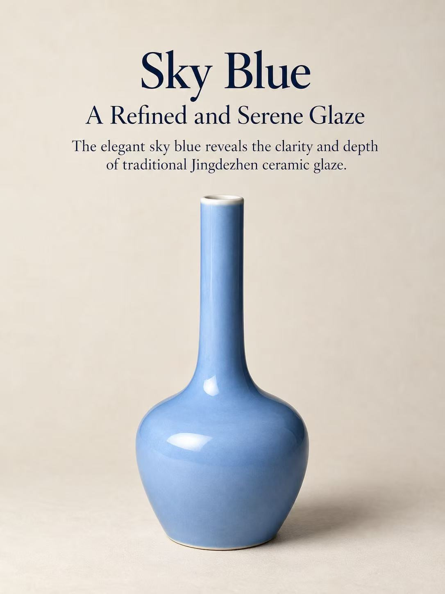
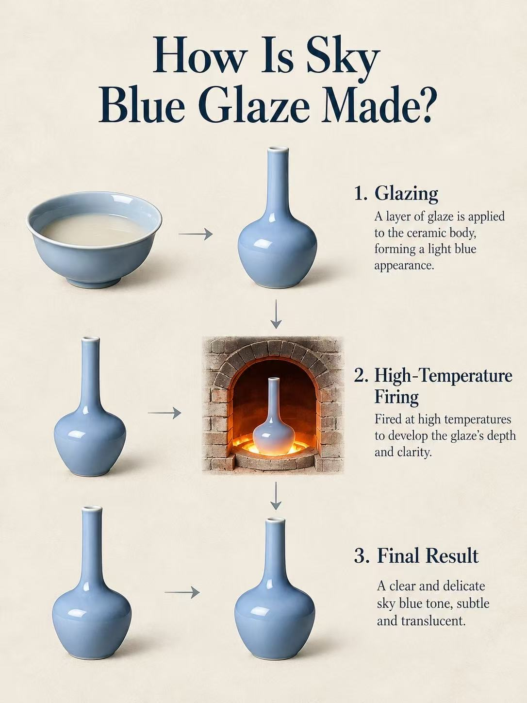
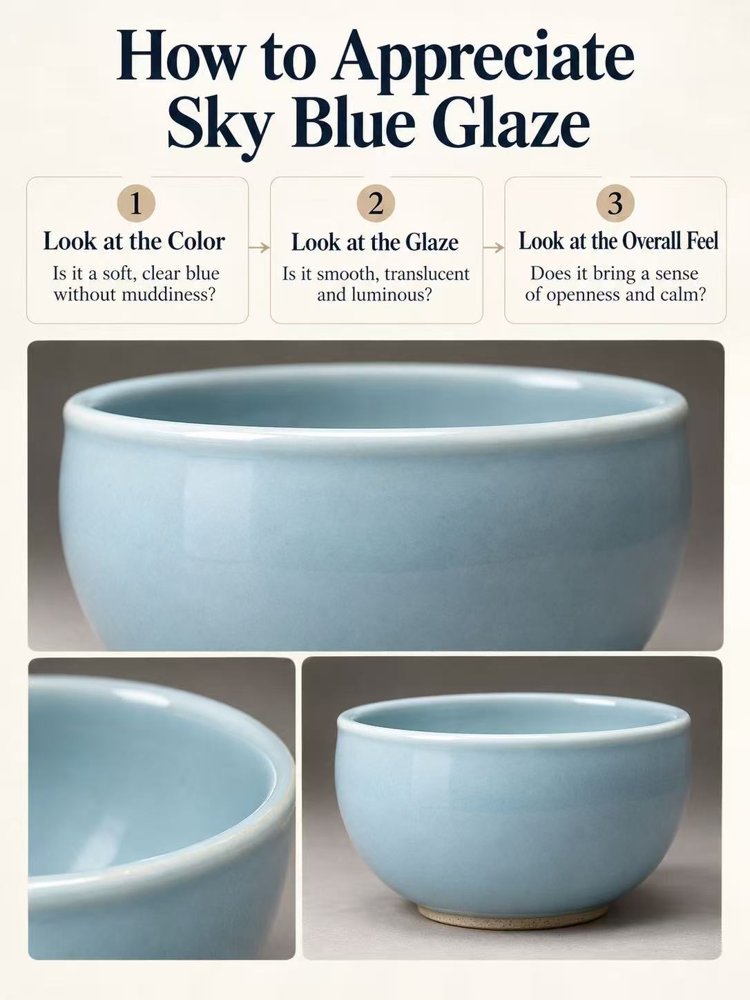
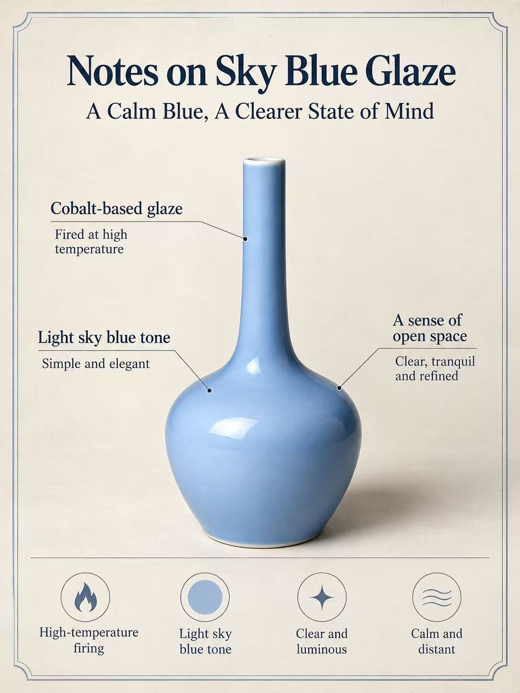
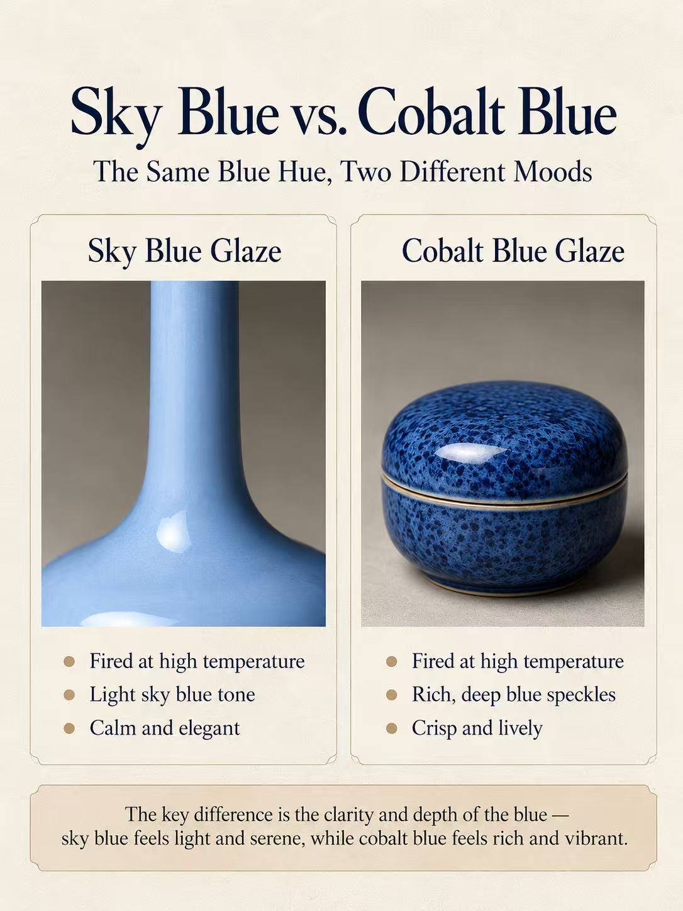
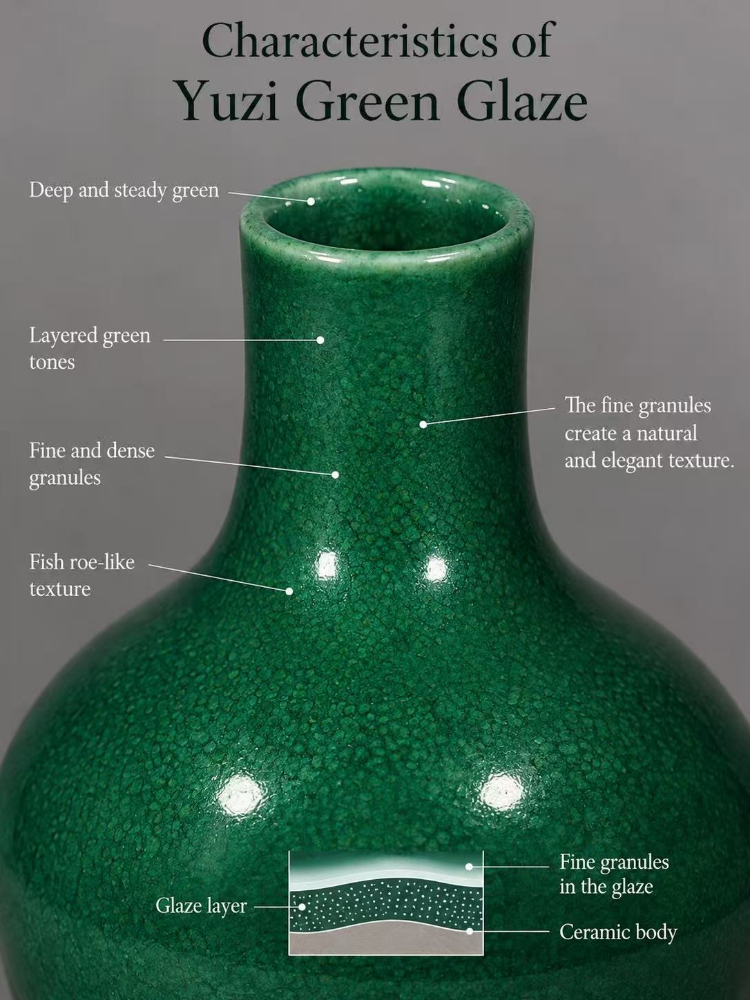
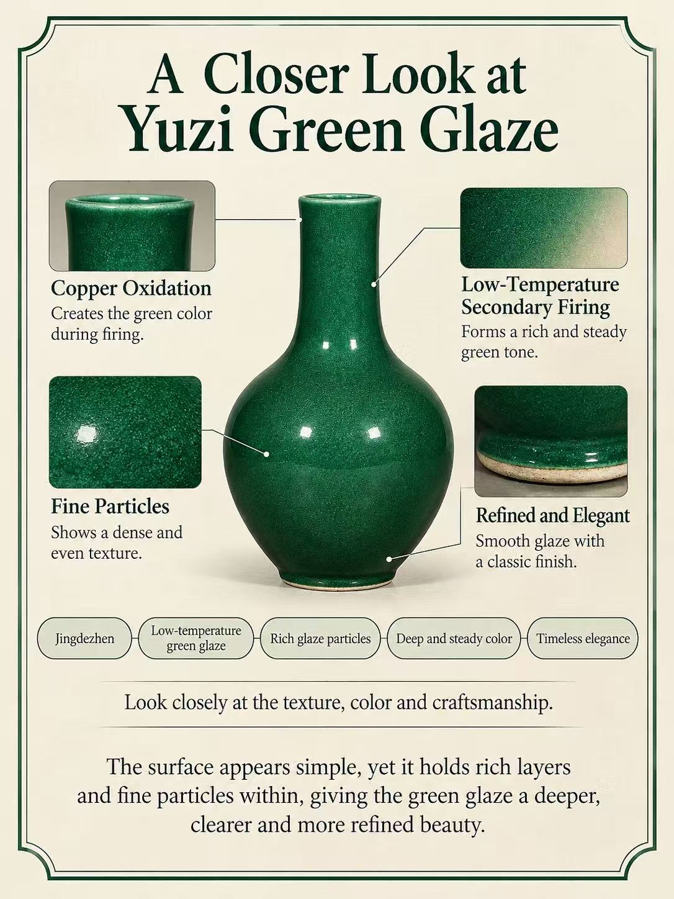
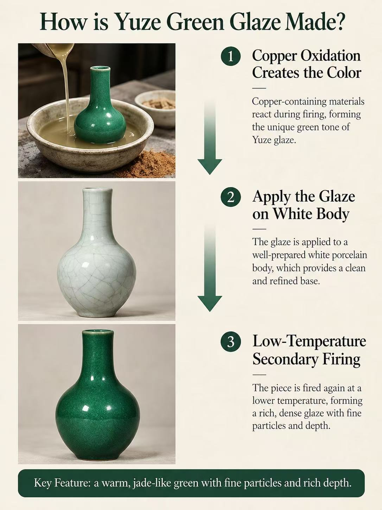
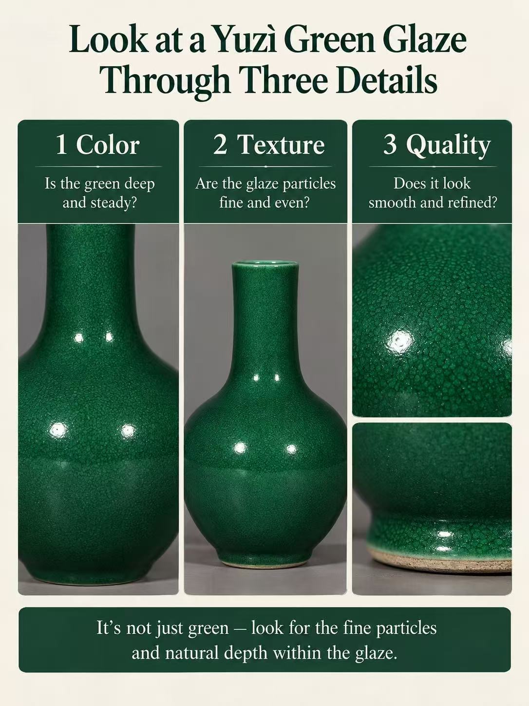
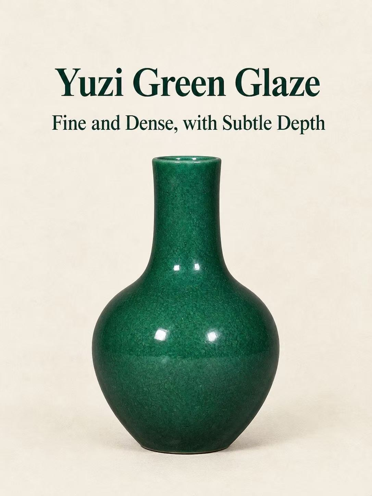

JING ATELIER · Ceramic journal
A closer look.
Glazes, forms and details gathered from our recent explorations of Chinese ceramics. Each carousel is kept in its original sequence.
Glaze study
Sky Blue Glaze
05 carousel images · original sequence preserved





Glaze study
Yuzi Green Glaze
05 carousel images · original sequence preserved





More stories are being gathered. Purple glaze, white porcelain, Jingdezhen museum collections and Song dynasty kiln studies are identified in our recent post history. Their source images are not currently available in this workspace, so they will be added when those originals can be recovered.